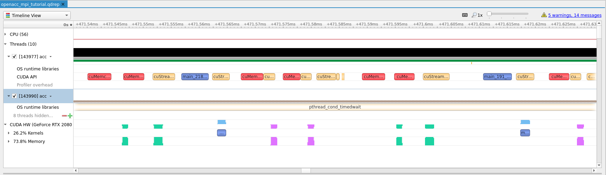
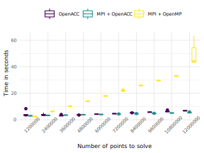

Combining MPI and OpenACC¶
A lot of existing HPC code is already set up to take advantage of multi-core and
cluster compute resources through MPI. When translating a codebase to OpenACC
we can take advantage of this existing infrastructure by giving each rank its
own GPU to achieve multi-GPU compute. This technique is most likely the easiest
path to utilizing multi-GPU for existing and new projects working with OpenACC.
Note
The alternative to combining MPI and OpenACC is to divide the work into
blocks, as we show in the asynchronous and multi-GPU
guide, however, with out combining such a technique with
MPI, sharing is limited to a single node.
Tip
For a summary of available directives we have used this reference guide.
Introduction¶
This guide will assume some familiarity with MPI and an introductory
level of knowledge about OpenACC.
After reading this guide you should be familiar with the following concepts
How to take an existing
MPIapplication and add OpenACCHow to go from an initial
CPU-only implementation to gradually adding OpenACC directivesHow to share data between
CPU,GPUand otherranksHow to assign the correct GPU based on
rankand nodes
How to profile a combined
MPIand OpenACC application
For this guide we will solve the 1 dimensional wave equation, shown below with
MPI task sharing.
/**
* MPI implementation of the 1D wave equation
*/
#include <math.h>
#include <mpi.h>
#include <stdio.h>
#include <stdlib.h>
#include <string.h>
// Default number of points to calculate over, if not given on command line
static const int NUM_POINTS = 400;
// Default number of steps to perform per point, if not given on command line
static const int NUM_STEPS = 4000;
// Default time interval, if not given on command line
static const double DEFAULT_DT = 0.00125;
// Speed of sound used for calculation
static const double SOUND_SPEED = 1.0;
// Define MPI tags for program
static const int lower_tag = 1010; // Send to lower rank
static const int upper_tag = 2020; // Send to higher rank
static const int scatter_tag = 3030; // Gather / Scatter data
static const int gather_tag = 4040; // Gather / Scatter data
// MPI Error codes
static const int ALLOC_WAVE_FAIL = 1001;
static const int ALLOC_WAVES_FAIL = 1002;
static const int INITIAL_DIST_RECV = 1003;
static const int LAST_DIST_RECV = 1004;
// Helper macro to check an MPI call and print error if it failed
#define check_mpi(code, err) \
if (code != MPI_SUCCESS) { \
printf("\033[0;31m%s\033[0m\n", err); \
printf("\tError code: \033[0;31m%d\033[0m\n", code); \
MPI_Abort(MPI_COMM_WORLD, 1337); \
return EXIT_FAILURE; \
}
/**
* Helper method to calculate the exact solution at 'x' with time step 't' and
* speed of sound 'c'
*/
double exact (const double x, const double t, const double c) {
return sin (2. * M_PI * (x - c * t));
}
/**
* Helper function to calculate the partial derivative du/dt
*/
double dudt (const double x, const double t, const double c) {
return -2. * M_PI * c * cos (2. * M_PI * (x - c * t));
}
int main (int argc, char** argv) {
// Define variables to use in calculation, initialized to default values
int points = NUM_POINTS;
int steps = NUM_STEPS;
double dt = DEFAULT_DT;
/************************** Command line handling ***************************/
if (argc > 1) {
if (strncmp (argv[1], "-h", 3) == 0 || strncmp (argv[1], "--help", 7) == 0) {
printf("Usage: \033[0;32m%s\033[0m <number of points> <number of steps> <timer interval>\n", argv[0]);
return EXIT_SUCCESS;
}
points = atoi (argv[1]);
if (points < 1) {
printf("\033[0;31mThe number of points must be a positive number larger than '1'!\033[0m\n");
return EXIT_FAILURE;
}
}
if (argc > 2) {
steps = atoi (argv[2]);
if (steps < 0) {
printf("\033[0;31mThe number of steps must be a positive number!\033[0m\n");
return EXIT_FAILURE;
}
}
if (argc > 3) {
dt = atof (argv[3]);
if (dt <= 0.) {
printf("\033[0;31mTime interval must be larger than '0.0'!\033[0m\n");
return EXIT_FAILURE;
}
}
/*************************** MPI work sharing *******************************/
// Initialize MPI
check_mpi (MPI_Init(&argc, &argv), "Could not initialize MPI!");
// Extract MPI size and current rank
int num_processes = 1;
int rank = 0;
check_mpi (MPI_Comm_size(MPI_COMM_WORLD, &num_processes), "Could not fetch COMM_WORLD size");
check_mpi (MPI_Comm_rank(MPI_COMM_WORLD, &rank), "Could not fetch COMM_WORLD rank");
if (points % num_processes != 0) {
if (rank == 0) {
printf("\033[0;31m%d points can't be split into %d processes!\033[0m\n", points, num_processes);
}
MPI_Finalize();
return EXIT_FAILURE;
}
const int equal_share = points / num_processes;
// The first and last rank calculates one additional element, while all other
// ranks calculates two additional points
const int local_points = (rank == 0 || rank == num_processes - 1) ? equal_share + 1 : equal_share + 2;
const int local_start = (rank == 0) ? 0 : equal_share * rank - 1;
/*************************** Implementation *********************************/
// Define pointer to global result so that we can compile, this variable is
// only allocated on the root rank
double* wave = NULL;
if (rank == 0) {
printf("Calculating 1D wave equation with \033[0;35m%d\033[0m points over \033[0;35m%d\033[0m steps with \033[0;35m%f\033[0m time step\n",
points, steps, dt);
printf("\t...split over \033[0;35m%d\033[0m processes, processing \033[0;35m%d\033[0m points each\n",
num_processes, local_points);
// On the root rank we allocate enough space for the full wave,
// it is used as the full result
wave = calloc (points, sizeof (double));
if (wave == NULL) {
printf("\033[0;31mCould not allocate %d points for wave results\033[0m\n", points);
// No need to check output, we will shortly exit anyway
MPI_Abort(MPI_COMM_WORLD, ALLOC_WAVE_FAIL);
return EXIT_FAILURE;
}
}
// Allocate memory for local work arrays
double* wave0 = calloc (local_points, sizeof (double));
double* wave1 = calloc (local_points, sizeof (double));
double* wave2 = calloc (local_points, sizeof (double));
if (wave0 == NULL || wave1 == NULL || wave2 == NULL) {
printf("\033[0;31mRank %d could not allocate enough space for arrays!\033[0m\n", rank);
MPI_Abort(MPI_COMM_WORLD, ALLOC_WAVES_FAIL);
return EXIT_FAILURE;
}
const double dx = 1. / ((double) points - 1);
const double alpha = SOUND_SPEED * dt / dx;
const double alpha2 = alpha * alpha;
if (rank == 0) {
if (fabs (alpha) >= 1.) {
printf("\033[0;33mComputation will be unstable with the given parameters\033[0m\n");
printf("\tdt = %f\n", dt);
printf("\tdx = %f (1. / %d)\n", dx, points);
printf("\t|alpha| = %f\n", fabs (alpha));
}
// Initialize the wave only on the root rank
for (int i = 0; i < points; i++) {
const double x = (double) i / (double) (points - 1);
wave[i] = exact (x, 0., SOUND_SPEED);
}
// Distribute computation to all other ranks
for (int r = 1; r < num_processes; r++) {
const int index = r * equal_share - 1;
const int num_points = (r < num_processes - 1) ? equal_share + 2 : equal_share + 1;
check_mpi (MPI_Send(&wave[index], num_points, MPI_DOUBLE, r, scatter_tag, MPI_COMM_WORLD),
"Could not distribute data");
}
// Distribute data to root rank also
for (int i = 0; i < local_points; i++) {
wave0[i] = wave[i];
wave1[i] = wave0[i];
}
} else {
MPI_Status out;
check_mpi (MPI_Recv(wave0, local_points, MPI_DOUBLE, 0, scatter_tag, MPI_COMM_WORLD, &out),
"Could not receive data");
if (out.MPI_ERROR != MPI_SUCCESS) {
printf("\033[0;31mMPI Recv error!\033[0m count: %ld, cancelled: %d, error: %d\n",
out._ucount / sizeof (double), out._cancelled, out.MPI_ERROR);
MPI_Abort(MPI_COMM_WORLD, INITIAL_DIST_RECV);
return EXIT_FAILURE;
}
for (int i = 0; i < local_points; i++) {
wave1[i] = wave0[i];
}
}
// Subsequent steps utilize the existing arrays for computation
for (int s = 1; s < steps + 1; s++) {
const double t = (double) s * dt;
if (s == 1) {
// First time step we use the initial derivative information to calculate
// the solution
for (int i = 1; i < local_points - 1; i++) {
const double x = (double) (i + local_start) / (double) (points - 1);
wave2[i] = (1. - alpha2) * wave1[i]
+ 0.5 * alpha2 * (wave1[i - 1] + wave1[i + 1])
+ dt * dudt (x, t, SOUND_SPEED);
}
} else {
// After first step we use previous calculations for future values
for (int i = 1; i < local_points - 1; i++) {
wave2[i] = 2. * (1. - alpha2) * wave1[i]
+ alpha2 * (wave1[i - 1] + wave1[i + 1])
- wave0[i];
}
}
// Share data with neighboors
if (rank > 0) {
check_mpi (MPI_Send(&wave2[1], 1, MPI_DOUBLE, rank - 1, lower_tag, MPI_COMM_WORLD),
"Could not send lower update");
MPI_Status out;
check_mpi (MPI_Recv(&wave2[0], 1, MPI_DOUBLE, rank - 1, upper_tag, MPI_COMM_WORLD, &out),
"Could not receive data for lower update");
} else {
wave2[0] = exact (0., t, SOUND_SPEED);
}
if (rank < num_processes - 1) {
MPI_Status out;
check_mpi (MPI_Recv(&wave2[local_points - 1], 1, MPI_DOUBLE, rank + 1, lower_tag, MPI_COMM_WORLD, &out),
"Could not receive data for upper update");
check_mpi (MPI_Send(&wave2[local_points - 2], 1, MPI_DOUBLE, rank + 1, upper_tag, MPI_COMM_WORLD),
"Could not send upper update");
} else {
wave2[local_points - 1] = exact (1., t, SOUND_SPEED);
}
// Shift data
for (int i = 0; i < local_points; i++) {
wave0[i] = wave1[i];
wave1[i] = wave2[i];
}
}
// Synchronize data back to root rank
if (rank == 0) {
printf("Synchronizing results\033[0;33m...\033[0m ");
// Copy root rank data back into result array
for (int i = 0; i < local_points; i++) {
wave[i] = wave1[i];
}
// Receive data from all other ranks
for (int r = 1; r < num_processes; r++) {
const int index = r * equal_share - 1;
const int num_points = (r < num_processes - 1) ? equal_share + 2 : equal_share + 1;
MPI_Status out;
check_mpi (MPI_Recv(&wave[index], num_points, MPI_DOUBLE, r, gather_tag, MPI_COMM_WORLD, &out),
"Could not receive data when gathering result");
if (out.MPI_ERROR != MPI_SUCCESS) {
printf("\033[0;31mMPI Recv error!\033[0m count: %ld, cancelled: %d, error: %d\n",
out._ucount / sizeof (double), out._cancelled, out.MPI_ERROR);
MPI_Abort(MPI_COMM_WORLD, LAST_DIST_RECV);
return EXIT_FAILURE;
}
}
printf("\033[0;32mcompleted\033[0m!\n");
printf("Calculation ended \033[0;32msuccesfully\033[0m!\n");
} else {
check_mpi (MPI_Send(wave1, local_points, MPI_DOUBLE, 0, gather_tag, MPI_COMM_WORLD),
"Could not send data back to root when gathering results");
}
// Free data before exit
free(wave0);
free(wave1);
free(wave2);
if (rank == 0) {
free(wave);
}
MPI_Finalize();
return EXIT_SUCCESS;
}
To compile this on Saga we will load OpenMPI and compile with the built-in MPI
compiler.
$ module load OpenMPI/4.0.3-PGI-20.4-GCC-9.3.0
$ mpicc -g -fast -o mpi wave_mpi.c
To run this with multiple ranks, e.g. split the work over 4 processes, use
the following command
$ srun --ntasks=4 --account=<your project number> --time=02:00 --mem-per-cpu=512M time ./mpi 1000000
Introducing OpenACC¶
When starting the transition of an MPI enabled application, like the above, it
is imperative to reduce complexity so as to not get overwhelmed by the
transition. We will therefore introduce OpenACC to the program by running it as
one process and once we are done with the OpenACC translation, add the necessary
setup for multi-GPU utilization.
Tip
Try to follow the next sections by implementing them yourself before you see our solution. This will increase your confidence with OpenACC.
Adding parallel loop directives¶
There are several places where we could put directives in this code, however, to keep this manageable we will focus on the main computational area of the code. Lets therefore start with the following three loops.
for (int s = 1; s < steps + 1; s++) {
const double t = (double) s * dt;
if (s == 1) {
// First time step we use the initial derivative information to calculate
// the solution
for (int i = 1; i < local_points - 1; i++) {
const double x = (double) (i + local_start) / (double) (points - 1);
wave2[i] = (1. - alpha2) * wave1[i]
+ 0.5 * alpha2 * (wave1[i - 1] + wave1[i + 1])
+ dt * dudt (x, t, SOUND_SPEED);
}
} else {
// After first step we use previous calculations for future values
for (int i = 1; i < local_points - 1; i++) {
wave2[i] = 2. * (1. - alpha2) * wave1[i]
+ alpha2 * (wave1[i - 1] + wave1[i + 1])
- wave0[i];
}
}
// Share data with neighboors
if (rank > 0) {
check_mpi (MPI_Send(&wave2[1], 1, MPI_DOUBLE, rank - 1, lower_tag, MPI_COMM_WORLD),
"Could not send lower update");
MPI_Status out;
check_mpi (MPI_Recv(&wave2[0], 1, MPI_DOUBLE, rank - 1, upper_tag, MPI_COMM_WORLD, &out),
"Could not receive data for lower update");
} else {
wave2[0] = exact (0., t, SOUND_SPEED);
}
if (rank < num_processes - 1) {
MPI_Status out;
check_mpi (MPI_Recv(&wave2[local_points - 1], 1, MPI_DOUBLE, rank + 1, lower_tag, MPI_COMM_WORLD, &out),
"Could not receive data for upper update");
check_mpi (MPI_Send(&wave2[local_points - 2], 1, MPI_DOUBLE, rank + 1, upper_tag, MPI_COMM_WORLD),
"Could not send upper update");
} else {
wave2[local_points - 1] = exact (1., t, SOUND_SPEED);
}
// Shift data
for (int i = 0; i < local_points; i++) {
wave0[i] = wave1[i];
wave1[i] = wave2[i];
}
}
Looking at the three loops we can see that every iteration is independent of
every other iteration and it is thus safe to add #pragma parallel loop before
each loop.
for (int s = 1; s < steps + 1; s++) {
const double t = (double) s * dt;
if (s == 1) {
// First time step we use the initial derivative information to calculate
// the solution
#pragma acc parallel loop
for (int i = 1; i < local_points - 1; i++) {
const double x = (double) (i + local_start) / (double) (points - 1);
wave2[i] = (1. - alpha2) * wave1[i]
+ 0.5 * alpha2 * (wave1[i - 1] + wave1[i + 1])
+ dt * dudt (x, t, SOUND_SPEED);
}
} else {
// After first step we use previous calculations for future values
#pragma acc parallel loop
for (int i = 1; i < local_points - 1; i++) {
wave2[i] = 2. * (1. - alpha2) * wave1[i]
+ alpha2 * (wave1[i - 1] + wave1[i + 1])
- wave0[i];
}
}
// Share data with neighboors
if (rank > 0) {
check_mpi (MPI_Send(&wave2[1], 1, MPI_DOUBLE, rank - 1, lower_tag, MPI_COMM_WORLD),
"Could not send lower update");
MPI_Status out;
check_mpi (MPI_Recv(&wave2[0], 1, MPI_DOUBLE, rank - 1, upper_tag, MPI_COMM_WORLD, &out),
"Could not receive data for lower update");
} else {
wave2[0] = exact (0., t, SOUND_SPEED);
}
if (rank < num_processes - 1) {
MPI_Status out;
check_mpi (MPI_Recv(&wave2[local_points - 1], 1, MPI_DOUBLE, rank + 1, lower_tag, MPI_COMM_WORLD, &out),
"Could not receive data for upper update");
check_mpi (MPI_Send(&wave2[local_points - 2], 1, MPI_DOUBLE, rank + 1, upper_tag, MPI_COMM_WORLD),
"Could not send upper update");
} else {
wave2[local_points - 1] = exact (1., t, SOUND_SPEED);
}
// Shift data
#pragma acc parallel loop
for (int i = 0; i < local_points; i++) {
wave0[i] = wave1[i];
wave1[i] = wave2[i];
}
}
To compile this on Saga we use the same command as above, adding -acc and
-Minfo=accel
$ mpicc -g -fast -acc -Minfo=accel -o acc wave_loop.c
To test the above code use srun as above, but do not ask for multiple tasks.
We also need to request GPU resources with --partition=accel and
--gres=gpu:1.
$ srun --ntasks=1 --partition=accel --gres=gpu:1 --account=<your project number> --time=02:00 --mem-per-cpu=512M time ./acc 1000000
The code runs on the GPU, but it is not particularly fast. The reason for this
is that we are now continually copying memory in and out of the GPU. If we look
at the main computation we can see that, apart from sharing two elements of the
array with the other ranks, we don’t need to work on the data on the CPU.
Checking with Nsight¶
To see the problem visually, we can use Nvidia
Nsight to profile the application.
We will simply change the invocation of time with nsys as follows.
$ srun --ntasks=1 --partition=accel --gres=gpu:1 --account=<your project number> --time=02:00 --mem-per-cpu=512M nsys profile -t cuda,openacc,osrt -o openacc_mpi_tutorial ./acc 1000000
This will create an openacc_mpi_tutorial.qdrep profile that we can download to
our local machine and view in Nsight Systems.

Note
Right click on the image and select View Image to see larger version.
Tip
If you have not used Nsight before we have an introductory tutorial available.
As we can see, in the image above, the Kernels to Memory ratio is quite one
sided, confirming our suspicion that we are spending too much time transferring
data, and not enough time computing.
Improving data locality¶
To improve data locality we need to know which pieces of information, e.g. which
arrays, are important to have on GPU and those we don’t need to transfer.
Taking a step back and thinking about the code we can see that wave0 and
wave2 are only used for scratch space while the end result ends up in wave1.
In addition we can see that this holds true, except for variable sharing with
MPI - which we will come back to below, for the whole steps loop.
Lets add a #pragma acc data directive above the steps loop so that data is
contained on the GPU for the whole computation. Since we have some data in
wave0 we will mark it as copyin, we need the data in wave1 after the loop
as well so we mark it as copy and wave2 we can just create on the GPU
since it is only used as scratch in the loop.
// Subsequent steps utilize the existing arrays for computation
#pragma acc data copy(wave1[:local_points]) copyin(wave0[:local_points]) \
create(wave2[:local_points])
for (int s = 1; s < steps + 1; s++) {
const double t = (double) s * dt;
if (s == 1) {
// First time step we use the initial derivative information to calculate
// the solution
#pragma acc parallel loop
for (int i = 1; i < local_points - 1; i++) {
const double x = (double) (i + local_start) / (double) (points - 1);
wave2[i] = (1. - alpha2) * wave1[i]
+ 0.5 * alpha2 * (wave1[i - 1] + wave1[i + 1])
+ dt * dudt (x, t, SOUND_SPEED);
}
} else {
// After first step we use previous calculations for future values
#pragma acc parallel loop
for (int i = 1; i < local_points - 1; i++) {
wave2[i] = 2. * (1. - alpha2) * wave1[i]
+ alpha2 * (wave1[i - 1] + wave1[i + 1])
- wave0[i];
}
Note
We had to remove the check_mpi calls in the region covered by the #pragma acc data since it is not allowed to exit out of a compute region with return.
Compile and run to see if we get any improvements.
$ mpicc -g -fast -acc -Minfo=accel -o acc wave_data.c
$ srun --ntasks=1 --partition=accel --gres=gpu:1 --account=<your project number> --time=02:00 --mem-per-cpu=512M time ./acc 1000000
The above runs quite a bit faster, but we have one problem now, the output is
wrong. This is due to the fact that we are now not sharing any data between the
GPU and the CPU. To improve this we will introduce the #pragma acc update
directive.
Tip
Use nsys and Nvidia Nsight to convince
yourself that the above stated improvement actually takes place.
{kind=link}
There and back again - GPU <=> CPU¶
As we just saw, we are missing some data on the CPU to initiate the MPI
transfer with. To remedy this we will add the #pragma acc update directive.
This directive tells the compiler to transfer data to or from GPU without an
associated block.
First we will copy data from the GPU back to the CPU so that our MPI
transfer can proceed. In the code below notice that we have added acc update self(...). self in this context means that we want to transfer from GPU to
CPU.
// After first step we use previous calculations for future values
#pragma acc parallel loop
for (int i = 1; i < local_points - 1; i++) {
wave2[i] = 2. * (1. - alpha2) * wave1[i]
+ alpha2 * (wave1[i - 1] + wave1[i + 1])
- wave0[i];
}
}
// Copy data from GPU to CPU to prepare for MPI sharing
#pragma acc update self(wave2[1:1])
#pragma acc update self(wave2[local_points - 2:1])
// Share data with neighboors
if (rank > 0) {
MPI_Send(&wave2[1], 1, MPI_DOUBLE, rank - 1, lower_tag, MPI_COMM_WORLD);
MPI_Status out;
MPI_Recv(&wave2[0], 1, MPI_DOUBLE, rank - 1, upper_tag, MPI_COMM_WORLD, &out);
} else {
wave2[0] = exact (0., t, SOUND_SPEED);
}
if (rank < num_processes - 1) {
MPI_Status out;
MPI_Recv(&wave2[local_points - 1], 1, MPI_DOUBLE, rank + 1, lower_tag, MPI_COMM_WORLD, &out);
MPI_Send(&wave2[local_points - 2], 1, MPI_DOUBLE, rank + 1, upper_tag, MPI_COMM_WORLD);
} else {
wave2[local_points - 1] = exact (1., t, SOUND_SPEED);
}
The MPI transfer will transmit the correct data, which is good, but we still
have a problem in our code. After the MPI transfer the points we received from
the other ranks are not updated on the GPU. To fix this we can add the same
acc update directive, but change the direction of the transfer. To do this we
change self with device as follows.
} else {
wave2[local_points - 1] = exact (1., t, SOUND_SPEED);
}
// Copy data we got from MPI neighbors back to GPU
#pragma acc update device(wave2[0:1])
#pragma acc update device(wave2[local_points - 1:1])
// Shift data
#pragma acc parallel loop
for (int i = 0; i < local_points; i++) {
wave0[i] = wave1[i];
wave1[i] = wave2[i];
}
}
We have made a few more improvements to the overall code to more fairly compare
with the pure MPI solution. See the wave_acc.c file below for additional
improvements.
Compile and run with the following, as usual.
$ mpicc -g -fast -acc -Minfo=accel -o acc wave_acc.c
$ srun --ntasks=1 --partition=accel --gres=gpu:1 --account=<your project number> --time=02:00 --mem-per-cpu=512M time ./acc 1000000
Splitting the work over multiple GPUs¶
We are almost done with our transition to OpenACC, however, what happens if we
launch the above wave_acc.c with two ranks on the same node. From the
perspective of the batch system we will be allocated two GPUs, two CPU cores
and a total of 512M+512M memory. However, our two MPI processes do not
specify the GPU to use and will utilize the default GPU. Since they are
running on the same node, that will likely be the same GPU.
To fix this we will read in our local rank, which is exported under OpenMPI as
OMPI_COMM_WORLD_LOCAL_RANK, then we can use this to get the correct index to
the GPU to use. We need to add #include <openacc.h> so that we can access
the Nvidia runtime and have access to acc_set_device_num() which we can use to
assign a unique GPU to each MPI process.
/*************************** MPI work sharing *******************************/
// Initialize MPI
check_mpi (MPI_Init(&argc, &argv), "Could not initialize MPI!");
// Extract MPI size and current rank
int num_processes = 1;
int rank = 0;
check_mpi (MPI_Comm_size(MPI_COMM_WORLD, &num_processes), "Could not fetch COMM_WORLD size");
check_mpi (MPI_Comm_rank(MPI_COMM_WORLD, &rank), "Could not fetch COMM_WORLD rank");
if (points % num_processes != 0) {
if (rank == 0) {
printf("\033[0;31m%d points can't be split into %d processes!\033[0m\n", points, num_processes);
}
MPI_Finalize();
return EXIT_FAILURE;
}
const int equal_share = points / num_processes;
// The first and last rank calculates one additional element, while all other
// ranks calculates two additional points
const int local_points = (rank == 0 || rank == num_processes - 1) ? equal_share + 1 : equal_share + 2;
const int local_start = (rank == 0) ? 0 : equal_share * rank - 1;
// Determine local rank relative to the node, this is used to allocate GPUs as
// we assume that each rank has its own GPU to utilize
MPI_Comm shared_node;
check_mpi (MPI_Comm_split_type (MPI_COMM_WORLD, MPI_COMM_TYPE_SHARED, 0,
MPI_INFO_NULL, &shared_node),
"Could not split COMM_WORLD into shared communicator");
int local_rank;
check_mpi (MPI_Comm_rank(shared_node, &local_rank), "Could not get local rank");
// Assign GPU based on local rank
const int devices = acc_get_num_devices (acc_device_nvidia);
acc_set_device_num (local_rank % devices, acc_device_nvidia);
We will compile this as before, but now we can run with arbitrary number of processes!
Warning
When using --gres=gpu:X we need to request the total number of GPUs that we
expect each node to use. So if we ask for --ntasks=2 we need to request two
GPUs with --gres=gpu:2. This will soon be remedied and can instead be
requested with --gpus-per-task.
$ mpicc -g -fast -acc -Minfo=accel -o acc wave_acc_mpi.c
$ srun --ntasks=2 --partition=accel --gres=gpu:2 --account=<your project number> --time=02:00 --mem-per-cpu=512M time ./acc 1000000
Summary¶
We have shown how to take an existing MPI application and add OpenACC to
utilize multi-GPU resources. To accomplish this, we added directives to move
compute from CPU to GPU. To enable synchronization we also added directives
to move small amounts of data back and fourth between the GPU and CPU so
that we could continue to exchange data with neighboring MPI ranks.
Speedup¶
Below is the runtime, as measured with time -p ./executable (extracting
real), of each version. The code was run with 1200000 points to solve.
Version |
Time in seconds |
Speedup |
|---|---|---|
|
|
N/A |
|
|
|
|
|
|
|
|
|
OpenACC** |
|
|
* To keep the comparison as fair as possible we compare the CPU resources
that would be the equivalent to the billing resources of 2 GPUs on
Saga.
** OpenACC implementation on a single GPU further optimized when no
MPI sharing is necessary.
Scaling¶
To illustrate the benefit of combining OpenACC with MPI we have, in the image
below, compared three different versions of the solver on increasingly larger
input.

From the figure we can see that on the example input, 1200000, MPI combined
with OpenMP is the quickest. However, as we scale the input size this CPU
version becomes slower compared to the GPU. The figure also illustrates the
advantage of a single GPU. We recommended, if possible, to use one GPU when
starting the transition to OpenACC and if the data size is larger than a single
GPU continue with MPI. If the application already utilizes MPI then we
recommend that, when using OpenACC, each rank is given more work than in the
pure CPU implementation.